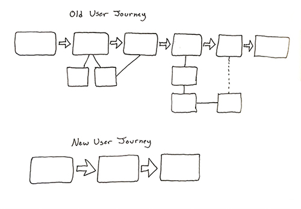
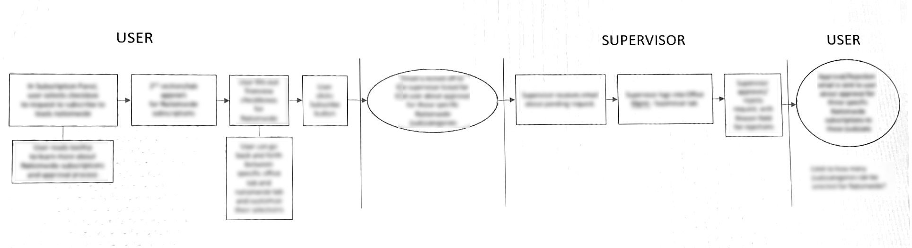
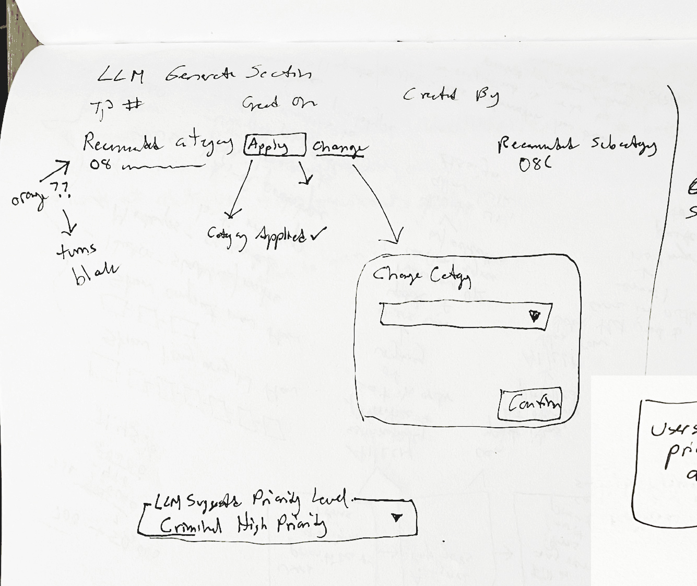
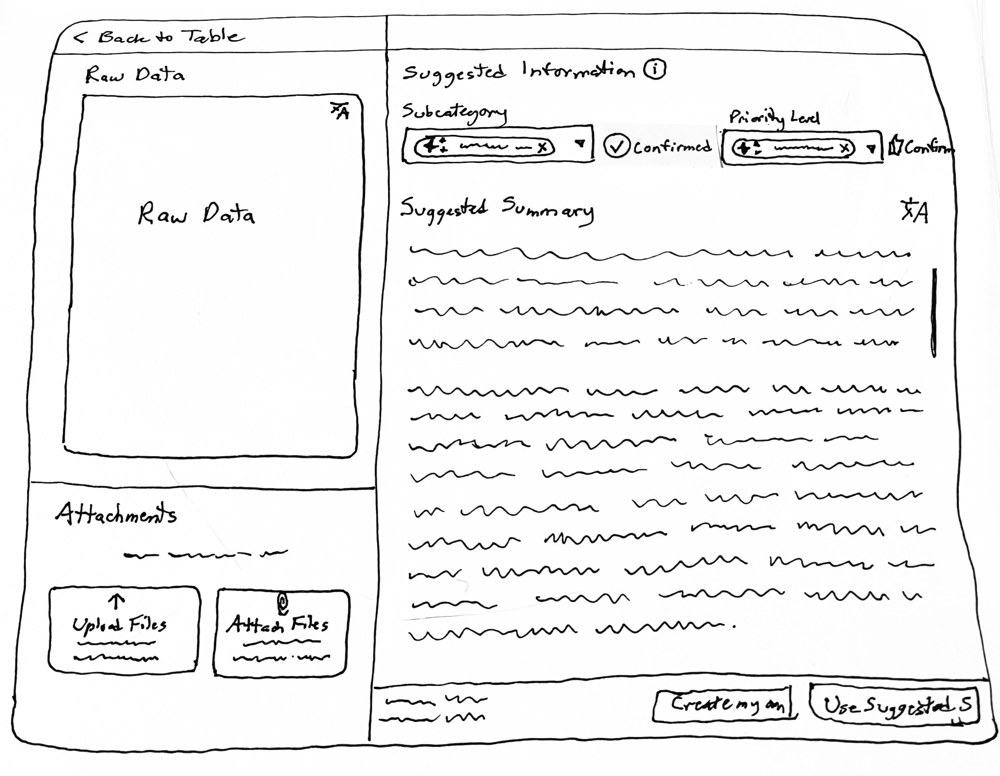
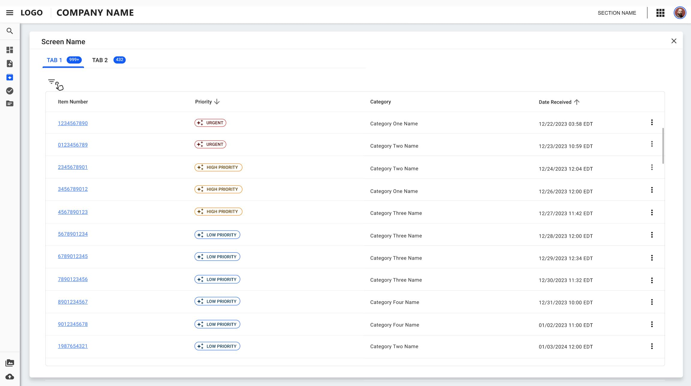
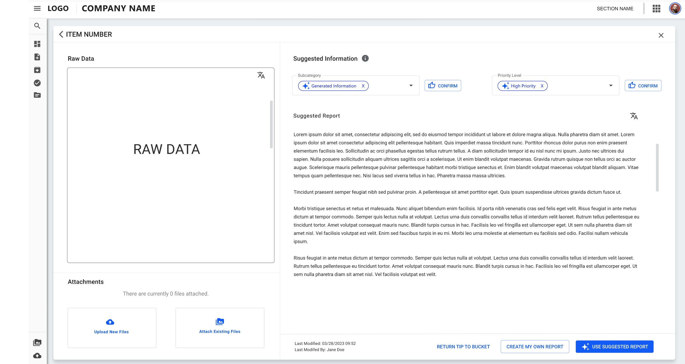
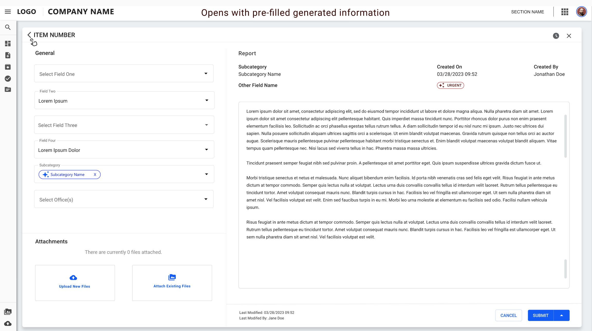

UI/UX Designer
 Back to Home
Back to Home
Client Enterprise Application Design UI/UX Case Study
Client Enterprise Application Design UI/UX Case Study
The product:
An enterprise application solution that enables supervisors to efficiently prioritize and assign huge numbers of incoming tasks
*Note the actual case study has been modified to reflect project privacy
Project duration: February 2025 – April 2025
The problem: The existing supervisor workflow was inefficient and outdated, requiring pasting information from multiple applications and manually prioritizing tens of thousands of items one at a time.
The goal: To streamline the process enabling supervisors to keep up with high influx of items and allow efficient completion of mission-critical tasks by the team.
My role:
- User research
- Business Requirements
- Wireframing
- Prototype development
Business Objectives:
- To incorporate AI/LLM to expedite and automate the intake process of requests
- To streamline the process of prioritizing assignments by supervisors
- To expedite the process of writing and submitting reports
- To allow batch assignments
- To increase completed reports by 500% weekly
User Interviews
I met with users to discover their pain points, processes, and working environment. I used this knowledge to help team determine the translation of these user needs into actionable items regarding the user interface and user journey.

Research
Research was performed online to determine current ways that users interact with Artificial Intelligence (AI)- to determine applicable ways AI can help our users and the visual cues needed for users to understand this functionality.
User Flow
I thought through the logical order of the user flow. This helped determine the necessary screens to perform tasks easily and without confusion, and to simplify development.

Ideation
Collaborating with the team, I performed rapid prototyping to determine the best user workflow and series of interactions. Rapid prototypes were created as sketches, low fidelity, and medium fidelity mockups with interactions.

Wireframes
Lo-Fi wireframes were created and presented among the team members.

Prototype
Based upon feedback, key screen mockups were created in mid-fidelity, then iterated upon after additional rounds of feedback to develop a working prototype to guide developers.



Accessibility considerations
1. Icons associated with AI were incorporated to aid understanding to users about this new exciting functionality.
2. A tooltip with additional information was provided to increase understanding to users.
3. The workflow also included familiar screens to limit the cognitive load brought about by new functionality.
Impact
Results:
Users were pleased they no longer need to manually write or copy and paste information from other applications for their mission-critical operations. They only need to have 1 application open at a time, simplifying their process and increasing their efficiency by 500%. They only need to confirm AI-generated content, rather than the burden of creating reports from scratch. Supervisors can also batch assign, instead of only one at a time, saving time.
What I learned:
I learned to think through the user's journey to discover features and functionality that would be useful for them. I also realized that we must consider the context and environment that users will be utilizing the app in. For example, if a supervisor needs to prioritize and assign 10,000 items in a week, they are able to move through the workflow as quickly as possible by performing tasks in batches, and merely confirming information, rather than creating it from scratch.
Back to Home
To Top of Page
Contact
Email: jenlycke@gmail.com
Phone: (757) 477-1244


Just For Fun